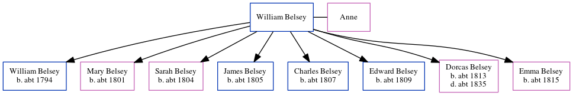

William Belsey
[ Home ] | [ Calendar ] | [ Surnames Index ] | [ Census Index ] | [ Family History ]A laborer, William Belsey was the 4 times great-grandfather of Nigel Horne and had 8 children with Anne: William, Mary Anne, Sarah, James, Charles, Edward, Dorcas and Emma.
Children
- William was born c. 1794
- Mary Anne was born c. 1801
- Sarah was born c. 1804
- James was born c. 1805
- Charles was born c. 1807
- Edward was born c. 1809
- Dorcas was born c. 1813
- Emma was born c. 1815
Family Tree
Generated by ged2site. Last updated on Jun 11, 2024